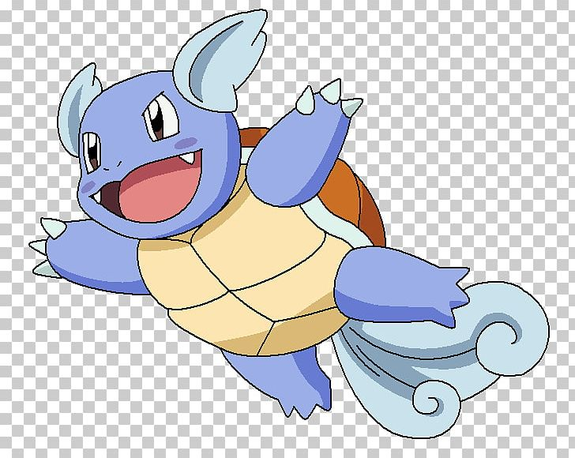
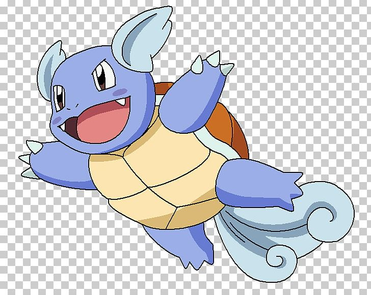

Type:Water
Counters:Grass
Wartortle, the Turtle Pokémon. The evolved form of Squirtle. Its long furry tail is a symbol of its age and wisdom.
HP: 59
Attack: 63
Defense: 80
Special Attack: 65
Special Defence: 80
Speed: 58